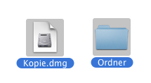
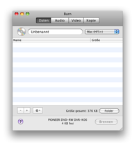
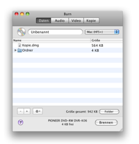
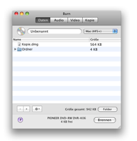
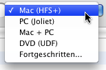

Daten-Discs brennen:
Daten-Discs werden meist mit Computern benutzt. Es gibt
verschiedene Arten von Daten-Discs. Jede mit einem bestimmten Zweck.
Burn kann die gebräuchslichsten Formate erstellen.
1 Wähle einige Dateien
Dies kann jedes File bzw. ein Ordner sein.

2 Wirf sie in die Liste
Wirf die Files in die Liste. Um einen einzelnen Ordner als Vorlage zu
nutzen wirf ihn einfach in das Daten-Tab-Feld.
 

3 Wähle ein Filesystem:
Mac (HFS+):
Wähle dieses Filesystem um es ausschließlich auf einem Mac
zu nutzen. Windows kann dieses Format nicht lesen.
PC (Joliet):
Dieses Filesystem ist am weitesten verbreitet und kann nahezu von jedem
Computer gelesen werden. Es kann auch mit DVDs verwendet werden.
DVD (UDF):
Dieses Filesystem ist das weitverbreitetste für Dvd´s.Es
kann von den meisten modernen Computern gelesen werden. (Die impliziert
Mac OS 9 und Windows 95 Systeme). Es kann auch für CD´s
verwendet werden. (Diese Option ist unter Panther allerdings nicht
verfügbar)
Mac + PC:
Dies ist ein Mix aus einem Mac- und Windows-Filesystemen. Es kann auf
fast allen Computern gelesen werden. Dieses Format erhält
mac-spezifische Informationen (z.b. Icons und Resource Forks)
Advanced:
Eine Kombination aus den darüberstehenden Filesystemen. Aber auch
ISO9660 (altes PC Filesystem), HFS Standard (altes Mac Filesystem) und
UDF / ISO 9660 in Panther.

4 Klicke auf "Burn"
Es erscheint ein Dialog-Fenster.

5 Wähle "Optionen"
Wähle die Optionen für die Brennsitzung. Für mehr
Einstellungen siehe die "Einstellungen" unter dem Burn-Menu.

6 Brennen der Disc
Nun drücke auf "Burn" um die Disc zu brennen.

7 Burn
wird nun die Disc brennen
Während des Brennens wird ein Dialog angezeigt der über den
aktuellen Brennstatus Auskunft gibt.